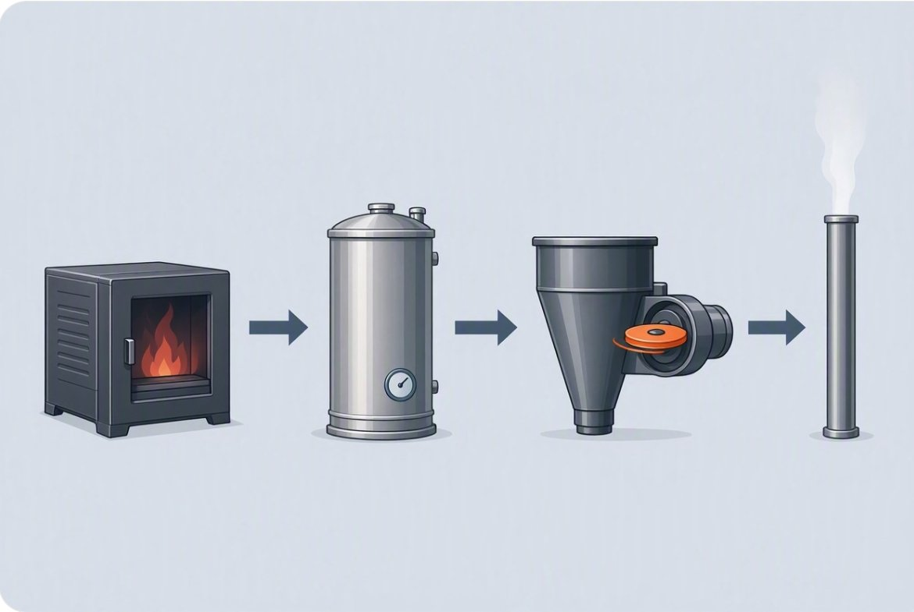

Start with your problem.

Baghouse vs. ESP vs. rotary collector
Three ways to take dust out of flue gas, each with a different weak spot. How each works, where each struggles, and the questions that decide the right fit.
Read the answer →
How much heat does a boiler lose up the stack?
Stack loss is usually a boiler's single biggest energy loss. How to estimate it from your stack temperature, why the water vapour matters, and what actually recovers it.
Read the answer →Condensing vs. standard economizers
A standard economizer stops around 250°F. A condensing economizer goes below the dew point to recover latent heat and water. How they differ, and what you need for one to work.
Read the answer →
Can data center waste heat be reused?
Almost every watt a data center draws ends up as heat. Where that heat can go, why liquid cooling changes the math, and the practical problems every heat-reuse project has to solve.
Read the answer →
Can waste heat be turned into electricity?
Yes, with an Organic Rankine Cycle. How ORC turbines work, what efficiency to realistically expect at different temperatures, and when making power from waste heat makes sense.
Read the answer →Looking for a quick answer? The FAQ covers 16 common questions in a paragraph each.